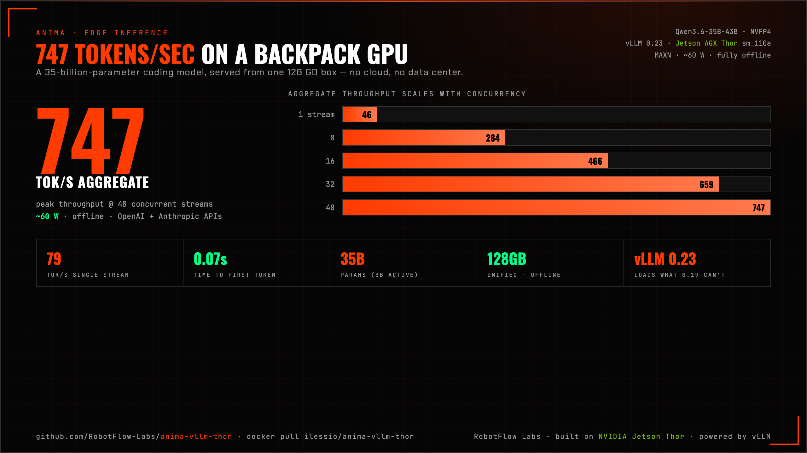

A 35-billion-parameter coding model at ~80 tok/s single-user and 747 tok/s aggregate — on one 128 GB box that runs fully offline at ~60 W. Loads NVFP4 MoE models NVIDIA's own Jetson image can't. OpenAI + Anthropic + Ollama APIs. Quantize any model on-device.

As of mid-2026 there's no prebuilt latest-vLLM image for the Jetson Thor — NVIDIA's ships vLLM 0.19,
which can't even load Qwen3.6-35B-A3B-NVFP4. This is a single reproducible Dockerfile that
upgrades the stack to vLLM 0.23 + PyTorch 2.11 + CUDA 13, native for Blackwell sm_110a.
| NVIDIA's image | anima-vllm-thor | |
|---|---|---|
| vLLM | 0.19.0 | 0.23.1 |
| Load Qwen3.6-35B-A3B-NVFP4 | ✕ KeyError | ✓ 79 / 747 tok/s |
| APIs | OpenAI | OpenAI + Anthropic + Ollama |
| On-device quantize → NVFP4 | — | ✓ web UI |
| Self-healing (reboot/power-loss) | — | ✓ auto-serve |
docker pull ilessio/anima-vllm-thor:thor-sm110-vllm0.23 # linux/arm64, Thor # control plane (OpenAI + Anthropic + Ollama APIs, quantize UI, self-heal): git clone https://github.com/RobotFlow-Labs/anima-vllm-thor && cd anima-vllm-thor/ui docker compose up -d --build # → http://<thor>:7000
Use --runtime nvidia on Jetson. Full 9-gotcha build recipe in the repo Dockerfile.
OpenAI /v1 (+ Factory Droid), Anthropic /v1/messages, Ollama /api/chat. Drop-in for Cursor, Open WebUI, n8n, LangChain, the SDKs.
Turn any standard bf16 HF model into a Thor-ready NVFP4 build on-device (NVIDIA ModelOpt), then one-click publish to HuggingFace.
Auto-restarts + auto-serves the last model after a reboot/power-loss. Model-aware memory guard degrades gracefully; one-click reclaim.
Bandwidth-bound single-stream + continuous-batching aggregate, measured on real hardware. Two profiles: latency (79) / throughput (747).
| Concurrency | per-stream | aggregate | TTFT |
|---|---|---|---|
| 1 | 79 tok/s | — | 0.07 s |
| 8 | 42 | 284 | 0.19 s |
| 16 | 32 | 466 | 0.32 s |
| 48 | 17 | 747 | 0.75 s |